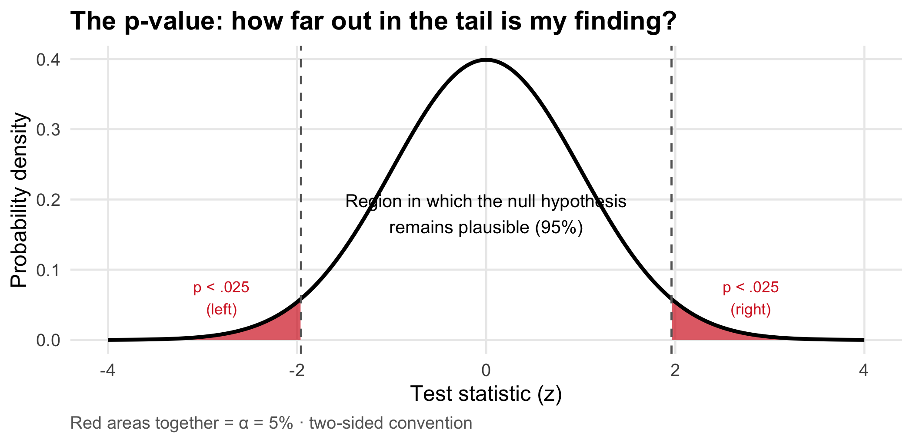
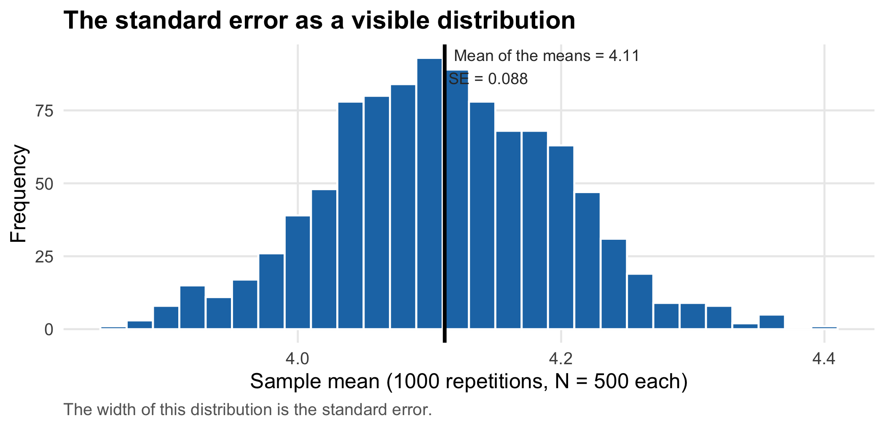
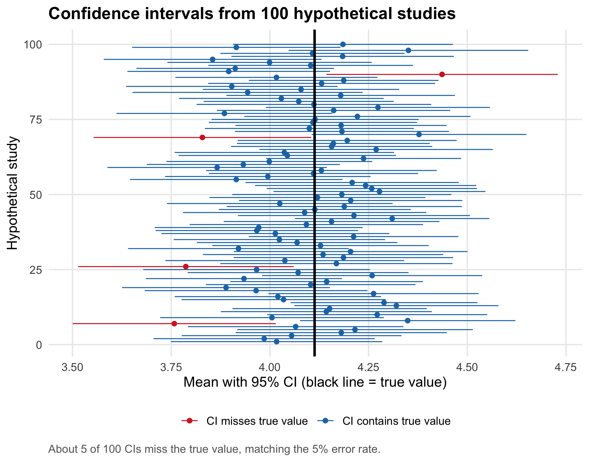
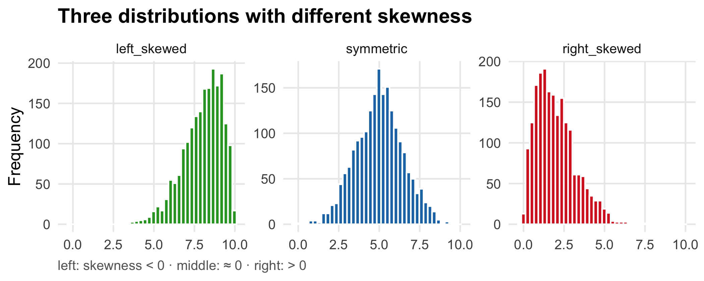
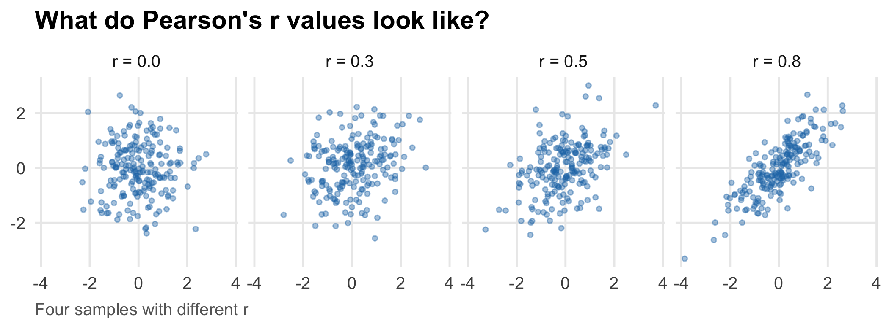
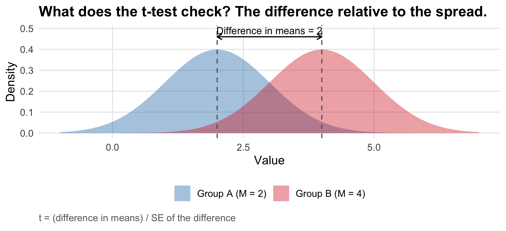
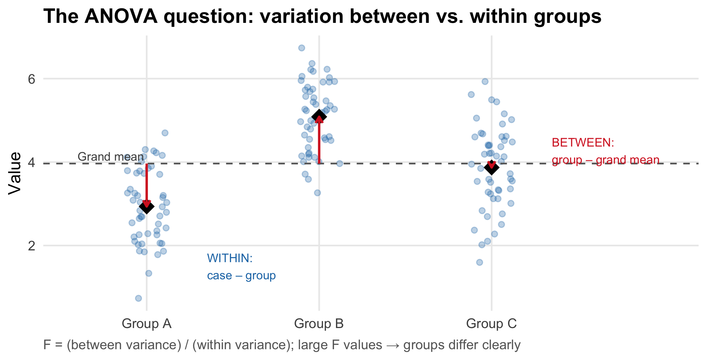
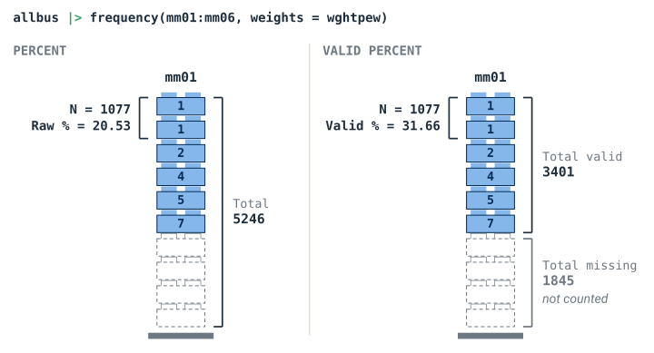

You built the data preparation pipeline in Chapter 5 and learned the ggplot2 grammar in Chapter 6. Now the actual analysis begins. Step by step, you go from the single variable to relationships between two variables, and in doing so you answer the first sub-questions of the mini study:
What does the distribution of Islamophobia in Germany in 2023 look like? Do East and West differ? Is Islamophobia related to populism?
Note
Research journal: Where are you in your mini study? You have the scales and you can use ggplot2. Now come the first hypothesis tests. By the end of this chapter you will know how Islamophobia is distributed, where differences in means between groups are statistically (and substantively) meaningful, and which variables are related bivariately to your target variable. This is the groundwork on which the multivariate modelling in Chapter 9 builds.
7.1 What this chapter is about
If you run a multivariate regression without first looking at the distribution of the target variable, you are working blind. The rule of thumb in empirical social research is describe first, then explain. Before you set up a complex model, you want to know what your variables look like. Are they distributed symmetrically or skewed? Where do most of the answers lie? Do the most important variables correlate with your target variable at all, or are you wasting time on irrelevant predictors?
Statistics calls these first steps univariate and bivariate analysis. The distinction is simple:
Univariate means one variable on its own. How is it distributed? Where is its mean? How widely do the values spread? A question for a histogram.
Bivariate means two variables together. Are they related? Do groups differ? A question for a scatter plot or a box plot.
In bivariate analysis there are two questions that are methodologically similar but conceptually different, and you should not confuse them:
Relationship: do two variables vary together? (Correlation for continuous variables, chi-squared for categorical ones.)
Difference: do groups differ in a variable? (t-test, ANOVA for continuous variables by group.)
Both questions address the same methodological core: is there a statistically robust relationship between two variables? The tools and the reporting formats, however, differ.
This chapter takes you through the mariposa functions for each standard test (frequencies, descriptive statistics, crosstab, correlation, comparison of means), each weighted, with an effect size and with output comparable to SPSS. By the end of the chapter you will know how Islamophobia is distributed, whether East and West differ and whether populism is related to it. This is the foundation you need for the multivariate modelling in Chapter 9.
What you will be able to do after this chapter
Report the frequency distribution of a variable, weighted and unweighted.
Determine the mean, median, spread, IQR, skewness, kurtosis and standard error.
Test univariate frequencies against a theoretical distribution (binomial test, χ² goodness-of-fit test).
Read crosstabs with the chi-squared test, Fisher’s exact test, McNemar’s test, adjusted residuals and effect sizes.
Calculate and interpret Pearson, Spearman and Kendall correlations, and control for third variables with a partial correlation.
Compare the means of two groups with a t-test, including checking the assumptions (normal distribution, Levene’s test).
Compare the means of several groups with a one-way ANOVA and choose between four post-hoc procedures.
Apply non-parametric alternatives when assumptions are violated.
Judge whether a significant effect is substantively small, medium or large.
Read the three basic concepts of statistical inference correctly: p-value, standard error and confidence interval.
7.2 Weighting: the argument weights =
In the ALLBUS sample, the new federal states (eastern Germany) are deliberately over-represented so that statements about them are statistically robust as well. For estimates for Germany as a whole, you therefore need the person-level east–west weight wghtpew. If you ignore the weights, your statements about “the Germans” are biased.
Tip
SPSS → R: Weighting in every function. In SPSS you switch on weighting once for the whole session with WEIGHT BY wghtpew. R works differently: every function that needs weighting gets the argument weights = separately. This seems cumbersome at first, but it is transparent: you can see at a glance whether an analysis is weighted.
In mariposa the argument is always weights = wghtpew, whether you calculate a frequency table or a regression.
Question: How strongly is the East represented in the sample, and how strongly after weighting?
Frequency Analysis Results
--------------------------
eastwest (REGION OF INTERVIEW: WEST - EAST)
# total N=5246 valid N=5246
+--------------------+------+--------+---------+--------+
| Value | N | Raw % | Valid % | Cum. % |
+--------------------+------+--------+---------+--------+
| OLD FEDERAL STATES | 3567 | 67.99 | 67.99 | 67.99 |
| NEW FEDERAL STATES | 1679 | 32.01 | 32.01 | 100.00 |
+--------------------+------+--------+---------+--------+
| Total | 5246 | 100.00 | 100.00 | |
+--------------------+------+--------+---------+--------+
Weighted Frequency Analysis Results
-----------------------------------
eastwest (REGION OF INTERVIEW: WEST - EAST)
# total N=5246 valid N=5246
+--------------------+------+--------+---------+--------+
| Value | N | Raw % | Valid % | Cum. % |
+--------------------+------+--------+---------+--------+
| OLD FEDERAL STATES | 4363 | 83.16 | 83.16 | 83.16 |
| NEW FEDERAL STATES | 883 | 16.84 | 16.84 | 100.00 |
+--------------------+------+--------+---------+--------+
| Total | 5246 | 100.00 | 100.00 | |
+--------------------+------+--------+---------+--------+
Interpretation. Unweighted, 32.01% of the respondents live in the new federal states; weighted, it is 16.84%. wghtpew gives each person a weight: in the West between 1.20 and 1.25, in the East between 0.50 and 0.55. The weighted N of a group is the sum of these weights, in the East 883 instead of 1679 (Figure 7.1).
Figure 7.1: Each brick stands for one respondent, its width for their weight. The figure shows the first six respondents from the West and the first three from the East; the percentages and N come from frequency().
7.3 Understanding inference: what lies behind every test
Before you run the first test, you need three concepts that appear in every test output and that most students from SPSS courses use mechanically without really understanding them: p-value, standard error and confidence interval. If you read these three correctly, you can interpret any test output sensibly. If you misunderstand them, you produce statements that get taken apart in a methods seminar.
7.3.1 What is a p-value?
Imagine you toss a coin 100 times and get heads 60 times. Is the coin biased, or can a result of 60:40 simply happen with a fair coin?
The p-value answers exactly this question. It tells you how likely the observed result (or an even more extreme one) would be if nothing were going on in reality, that is, if the null hypothesis were true. For the coin, the null hypothesis is “the coin is fair, the probability of heads is 0.5”. A p-value of 0.057 means: if the coin were fair, you would see 60 or more heads in 5.7% of all repeated experiments.
The convention p < .05 means: “The result is so unlikely under the null hypothesis that we reject the null hypothesis; we assume that an effect really exists.”
Imagine the distribution of possible test results under the null hypothesis as a bell curve. The red areas at the edges are the rejection region. If your finding lands there, it is “statistically significant”:
p_data<-tibble(z =seq(-4, 4, length.out =500))|>mutate(d =dnorm(z))p_data|>ggplot(aes(x =z, y =d))+geom_area(data =filter(p_data, z>=qnorm(0.975)), fill ="#d62728", alpha =0.7)+geom_area(data =filter(p_data, z<=qnorm(0.025)), fill ="#d62728", alpha =0.7)+geom_line(linewidth =1)+geom_vline(xintercept =c(qnorm(0.025), qnorm(0.975)), linetype ="dashed", color ="grey40")+annotate("text", x =0, y =0.18, label ="Region in which the null hypothesis\nremains plausible (95%)", size =3.5)+annotate("text", x =2.8, y =0.06, label ="p < .025\n(right)", color ="#d62728", size =3)+annotate("text", x =-2.8, y =0.06, label ="p < .025\n(left)", color ="#d62728", size =3)+labs(x ="Test statistic (z)", y ="Probability density", title ="The p-value: how far out in the tail is my finding?", caption ="Red areas together = α = 5% · two-sided convention")

Interpretation. The further your finding reaches into a red area, the smaller the p-value, and the less likely the finding is under the null hypothesis. At p = .03 you are just inside the red region; at p = .001 you are deep inside it.
Warning
Caution: Classic misinterpretations of the p-value.
“p < .05 means there is only a 5% chance that the null hypothesis is true.” Wrong. The p-value says nothing about the probability of the null hypothesis. It only says how likely these data would be under the null hypothesis.
“p < .05 means the effect is large.” Wrong. p measures how sure you can be that there is an effect; it does not measure how large the effect is. With N = 5000, almost any effect, however small, becomes significant. Effect sizes measure the strength.
“p = .04 is significant, p = .06 is not.” The .05 threshold is only a convention. p = .051 and p = .049 are statistically almost identical. Read p-values as a continuous measure of evidence rather than as a yes-or-no verdict.
7.3.2 What is a standard error?
If you collected ALLBUS 2023 again with 5246 other respondents, you would not get exactly the same mean for Islamophobia, only one close to it. If you repeated this 1000 times, you would have 1000 slightly different means. The spread of these hypothetical means is called the standard error (SE).
The SE is not the same as the standard deviation (SD):
SD: how widely do the individual respondents spread around the mean? “How different are the people?”
SE: how widely would the mean spread if I repeated the study? “How precise is my estimate?”
The SE is always smaller than the SD and shrinks as the sample grows (formula: SE = SD / √N). The larger N, the more precise the estimate. This is why large samples have smaller SEs, and with them narrower confidence intervals and smaller p-values.
You can simulate this. The code draws 1000 random subsamples of 500 respondents from the ALLBUS and calculates the mean of each. The spread of these 1000 means is the standard error, made visible:
set.seed(42)sim_means<-numeric(1000)# empty vector for 1000 meansfor(iin1:1000){draw<-sample(allbus$islamophobia, size =500, replace =TRUE)sim_means[i]<-mean(draw, na.rm =TRUE)}tibble(mean =sim_means)|>ggplot(aes(x =mean))+geom_histogram(binwidth =0.02, fill ="#1f77b4", color ="white")+geom_vline(xintercept =mean(sim_means), color ="black", linewidth =1)+annotate("text", x =mean(sim_means), y =90, label =sprintf("Mean of the means = %.2f\nSE = %.3f",mean(sim_means), sd(sim_means)), hjust =-0.05, color ="grey20", size =3.2)+labs(x ="Sample mean (1000 repetitions, N = 500 each)", y ="Frequency", title ="The standard error as a visible distribution", caption ="The width of this distribution is the standard error.")

Interpretation. If there had been only a single ALLBUS survey, its mean would have landed somewhere in this distribution. The standard deviation of the distribution shown is the standard error of the estimate.
7.3.3 What is a confidence interval?
The 95% confidence interval (CI) is the natural extension of the standard error. Instead of reporting only the point estimate (e.g. mean = 4.2), you give the interval in which the true value could plausibly lie: “M = 4.2, 95% CI [4.10, 4.30]”. Rule of thumb: 95% CI ≈ mean ± 1.96 × SE.
Warning
Caution: The most common misinterpretation of the CI. A 95% CI does not mean “the true value lies inside it with a probability of 95%”. It means: if you repeated the study infinitely often and calculated a CI each time, 95% of all these intervals would include the true value. The true value is fixed; the interval varies across repetitions.
In practice, a rule of thumb for the interpretation is simpler: “A value outside the 95% CI is hard to reconcile with the data; a value inside it is compatible with the data.”
The next chunk simulates 100 hypothetical studies (N = 200 each) from the ALLBUS, calculates the mean and the 95% CI for each and shows how many of them include the true value:
set.seed(2026)true_value<-mean(allbus$islamophobia, na.rm =TRUE)sim_cis<-map_dfr(1:100, function(i){draw<-sample(allbus$islamophobia, 200, replace =TRUE)draw<-draw[!is.na(draw)]m<-mean(draw)se<-sd(draw)/sqrt(length(draw))tibble(study =i, m =m, lower =m-1.96*se, upper =m+1.96*se)})sim_cis|>mutate(covers =lower<=true_value&true_value<=upper)|>ggplot(aes(x =m, y =study, xmin =lower, xmax =upper, color =covers))+geom_pointrange(size =0.2, linewidth =0.4)+geom_vline(xintercept =true_value, linewidth =1, color ="black")+scale_color_manual(values =c(`TRUE` ="#1f77b4", `FALSE` ="#d62728"), labels =c("CI misses true value", "CI contains true value"), name =NULL)+labs(x ="Mean with 95% CI (black line = true value)", y ="Hypothetical study", title ="Confidence intervals from 100 hypothetical studies", caption ="About 5 of 100 CIs miss the true value, matching the 5% error rate.")

Interpretation. You can see straight away what “95% confidence” really means: about 95 of 100 intervals include the true value, and about 5 miss it (red intervals). For a single study you do not know whether it belongs to the 95 or to the 5, but on average the procedure is right in 95% of cases.
7.3.4 Effect sizes vs. significance: two separate questions
A test answers two questions that you must keep clearly apart:
“Does the effect exist at all?” → p-value, confidence interval.
“How large is the effect?” → effect size (Cohen’s d, Hedges’ g, Cramér’s V, R²).
With N = 5246 (as in the ALLBUS), almost every effect becomes significant. p then only tells you that you can be sure of the effect, not whether it means anything. The effect size provides the substantive judgement. Both belong together in every methods report.
In the test outputs that follow, you see these building blocks again and again: estimate + p-value + CI + effect size. If you read them together, you have the tools to report findings clearly.
7.4 Univariate statistics
7.4.1 Frequency tables with frequency()
frequency() from mariposa is the R counterpart to SPSS FREQUENCIES. It gives the same output (value, label, N, percent, valid percent, cumulative percent), plus a short summary of the dispersion measures at the top.
Question: What is the distribution of East and West in the weighted sample?
Weighted Frequency Analysis Results
-----------------------------------
eastwest (REGION OF INTERVIEW: WEST - EAST)
# total N=5246 valid N=5246
+--------------------+------+--------+---------+--------+
| Value | N | Raw % | Valid % | Cum. % |
+--------------------+------+--------+---------+--------+
| OLD FEDERAL STATES | 4363 | 83.16 | 83.16 | 83.16 |
| NEW FEDERAL STATES | 883 | 16.84 | 16.84 | 100.00 |
+--------------------+------+--------+---------+--------+
| Total | 5246 | 100.00 | 100.00 | |
+--------------------+------+--------+---------+--------+
Interpretation. The weighted frequencies reflect the actual ratio of East to West in the German population: about 83% West and 17% East. You already know this table from the section on weighting, where it appeared next to the unweighted table with 32.01% East (Figure 7.1).
For a whole item battery, you combine frequency() with tidyselect helpers:
In the table for mm01, the value 1 has an N of 1077, 20.53 Raw % and 31.66 Valid %. Raw % (percent) refers to all respondents, weighted 5246. Valid % (valid percent) refers only to the respondents with a valid answer, weighted 3401; the missing values (weighted 1845) do not count there (Figure 7.2).
Figure 7.2: Raw % and Valid % for the value 1 of mm01. The tower is a diagram of ten bricks, sorted by value; N and the totals are weighted sums from the table.
Importantmariposa tip: fre() as an alias close to SPSS
If you are switching from SPSS, you are more likely to type fre(allbus, sex) than frequency(...). mariposa exports fre() as an alias that works in the same way and takes the same arguments.
7.4.2 Descriptive statistics with describe()
With describe() you get the mean, median, standard deviation, range, IQR and skewness for one or more variables.
Question: Where does the average scale score for Islamophobia lie?
allbus|>describe(islamophobia, weights =wghtpew)
Weighted Descriptive Statistics
-------------------------------
-------------------------------------------------------------------------
Variable Mean Median SD Range IQR Skewness N Missing
-------------------------------------------------------------------------
islamophobia 4.012 4.000 1.516 6.000 2.333 0.207 3344 1902
-------------------------------------------------------------------------
Interpretation. The weighted mean of about 4 on a 1–7 scale means that, on average, Germany lies in the middle of the scale, with considerable spread (SD ≈ 1.5). In weighted analyses, N and Missing are sums of weights, not case counts, as in SPSS with WEIGHT BY. Because wghtpew has a mean of about 1, they hardly differ from the unweighted case counts.
Weighted Descriptive Statistics
-------------------------------
-----------------------------------------------------------------------------
Variable Mean Median SD Range IQR Skewness N Missing
-----------------------------------------------------------------------------
islamophobia 4.012 4.000 1.516 6.000 2.333 0.207 3344 1902
populism 3.354 3.286 0.759 4.000 1.000 0.056 3560 1686
age 52.104 54.000 18.289 81.000 29.000 -0.009 5224 22
-----------------------------------------------------------------------------
With the argument show you choose the statistics yourself, for example to see the kurtosis as well as the skewness; the standard output does not include the kurtosis. show = "all" shows everything (including minimum, maximum, variance, mode and quartiles):
allbus|>describe(islamophobia, populism, weights =wghtpew, show =c("mean", "sd", "skew", "kurtosis"))
Skewness and kurtosis are two shape measures that show the character of a distribution at a glance:
Skewness describes symmetry. Symmetric (skewness ≈ 0): the classic bell. Left-skewed (negative): a long tail to the left (typical of satisfaction scales, where most people answer “high”). Right-skewed (positive): a long tail to the right (typical of income distributions).
Kurtosis describes how peaked or flat a distribution is. mariposa reports the excess kurtosis: 0 corresponds to a normal distribution. Positive (leptokurtic) means a peaked distribution with heavy tails; negative (platykurtic) means a flatter distribution. With a kurtosis of about −0.76, our Islamophobia scale is clearly flatter than a bell; the answers are spread widely across the scale.
Three skewness values compared:
set.seed(7)n<-2000tibble( left_skewed =10-rbeta(n, 2, 8)*10, symmetric =rnorm(n, 5, 1.5), right_skewed =rbeta(n, 2, 8)*10)|>pivot_longer(everything(), names_to ="shape", values_to ="value")|>mutate(shape =factor(shape, levels =c("left_skewed", "symmetric", "right_skewed")))|>ggplot(aes(x =value, fill =shape))+geom_histogram(bins =40, color ="white")+facet_wrap(~shape, scales ="free_y")+scale_fill_manual(values =c("#2ca02c", "#1f77b4", "#d62728"))+theme(legend.position ="none")+labs(x =NULL, y ="Frequency", title ="Three distributions with different skewness", caption ="left: skewness < 0 · middle: ≈ 0 · right: > 0")

7.4.3 Single statistics with w_mean() and related functions
Sometimes you do not need a whole table, only one value, for example for a summarise() pipeline or a caption. mariposa has weighted functions for single statistics:
Function
What it returns
w_mean()
weighted mean
w_median()
weighted median
w_modus()
weighted mode (most frequent value)
w_sd()
weighted standard deviation
w_var()
weighted variance
w_se()
weighted standard error
w_quantile()
weighted quantiles
w_range()
weighted range (min/max)
w_iqr()
weighted interquartile range
w_skew()
weighted skewness
w_kurtosis()
weighted kurtosis (excess kurtosis)
allbus|>w_mean(islamophobia, weights =wghtpew)
Weighted Mean Statistics
------------------------
Weights: wghtpew
----------------------------------
Variable Mean N Missing
----------------------------------
islamophobia 4.012 3344 1902
----------------------------------
Applied directly to the dataset, w_mean() prints a small table with the mean, N and Missing. Insidesummarise(), the same function returns only the bare number, and this is how you build your own subgroup tables:
allbus|>filter(!is.na(eastwest))|>summarise( n =sum(!is.na(islamophobia)), mean =w_mean(islamophobia, weights =wghtpew), sd =w_sd(islamophobia, weights =wghtpew), se =w_se(islamophobia, weights =wghtpew), .by =eastwest)
# A tibble: 2 × 5
eastwest n mean sd se
<fct> <int> <dbl> <dbl> <dbl>
1 OLD FEDERAL STATES 2256 3.90 1.47 0.0279
2 NEW FEDERAL STATES 1089 4.55 1.61 0.0680
Here n counts only the respondents who have a scale score and therefore enter the mean. A plain n() would count all respondents in the region (3567 in the West, 1679 in the East), including the many without a scale score, for example because of the split module. Note also that n is an unweighted case count. With weights =, t_test() and describe() report the sum of the weights, which differs from n because the East is over-represented.
This is the R version of SPSS AGGREGATE with WEIGHT BY, all in one block and one pipe.
7.4.4 Frequency tests with binomial_test() and chisq_gof()
If you want to test whether an observed frequency differs significantly from a theoretical proportion, you do not need a comparison with another variable; a test against a fixed value is enough.
Question: Does the proportion of women in the weighted sample differ significantly from 50%?
allbus|>filter(sex%in%c(1, 2))|># male and female only (non-binary is a separate category)binomial_test(sex, p =0.5, weights =wghtpew)
Binomial Test: sex [Weighted]
Group 1 (MALE): prop = 0.488 vs 0.500, p = 0.084, N = 5218
Use summary() for detailed output.
Interpretation. As “group 1”, binomial_test() takes the category of the first valid case in the dataset, as SPSS does; here this is MALE. The weighted proportion of men is 48.8%, so the proportion of women is 51.2%. With p = .084, the deviation from 50% is not significant: in this respect the sample is balanced.
For more than two categories, for example to answer “is education distributed evenly across all levels?”, chisq_gof() is the goodness-of-fit test:
allbus|>chisq_gof(educ_cat, weights =wghtpew)
Chi-Square Goodness-of-Fit Test: educ_cat [Weighted]
chi2(2) = 655.199, p < 0.001 ***, N = 5086
Use summary() for detailed output.
educ_cat is the three-category education variable (low / medium / high) that the setup chunk of this chapter creates from educ with rec(), as shown in Section 5.3. You use it throughout Chapters 7 and 9.
Interpretation. χ² is very large and p < .001: the three education groups are far from equal in size. The compact output shows the test statistic, the degrees of freedom and p; summary() gives the observed and expected frequencies per category together with the residuals. You set target distributions other than “equally distributed” with expected =, as proportions or as expected frequencies, as in SPSS with /EXPECTED.
7.5 Bivariate statistics
Before you start on the tests, an overview helps. Which procedure you need depends on the level of measurement of the two variables:
Variable 1
Variable 2
Test (mariposa)
Effect size
categorical
categorical
chi_square()
Cramér’s V / phi
categorical (2 groups)
continuous
t_test()
Hedges’ g
categorical (≥ 3 groups)
continuous
oneway_anova()
η²
continuous
continuous
pearson_cor()
r (is the effect size)
ordinal
ordinal
spearman_rho() / kendall_tau()
ρ / τ
If you lose track, come back to this table.
The last column names the effect size that belongs to each test. As described in Section 7.3, it adds the substantive size of the effect to the p-value. For the most important measures there are rules of thumb from Cohen:
Measure
Small
Medium
Large
Cramér’s V (chi-squared)
≥ 0.10
≥ 0.30
≥ 0.50
Pearson’s r (correlation)
≥ 0.10
≥ 0.30
≥ 0.50
Hedges’ g (t-test)
≥ 0.20
≥ 0.50
≥ 0.80
η² (ANOVA)
≥ 0.01
≥ 0.06
≥ 0.14
The mariposa tests return effect sizes automatically; you only need to read and interpret them.
7.5.1 Crosstabs with crosstab()
With two categorical variables, for example education × region, you cannot compare means, and you cannot calculate a correlation in the classic sense. The right presentation is a crosstab (cross-tabulation): rows for one variable, columns for the other, and cells with the frequencies. From the table you can read directly whether certain combinations occur more often than others. This is the standard starting point of any analysis of categorical variables.
crosstab() from mariposa produces this table, including row, column and total percentages. The default is row percentages: each row is scaled to 100%. This lets you read conditional probabilities: “What proportion of West Germans have a high level of education, compared with the proportion of East Germans?”
Question: Is education distributed differently in East and West?
Crosstabulation: REGION OF INTERVIEW: WEST - EAST x RESP: GENERAL SCHOOL LEAVING CERTIFICATE (recoded)
------------------------------------------------------------------------------------------------------
- Row variable: eastwest
- Column variable: educ_cat
- Percentages: Row percentages
- Weights variable: wghtpew
- N (valid): 5085 (weighted)
- Missing: 161 (weighted)
+----------------------------------+-------+--------+-------+--------+
| | RESP: GENERAL SCHOOL LEAVING |
| | CERTIFICATE (recoded) |
| REGION OF INTERVIEW: WEST - EAST | low | medium | high | Total |
+----------------------------------+-------+--------+-------+--------+
| OLD FEDERAL STATES | 935 | 1163 | 2123 | 4221 |
| row % | 22.2% | 27.6% | 50.3% | 100.0% |
+----------------------------------+-------+--------+-------+--------+
| NEW FEDERAL STATES | 115 | 361 | 388 | 864 |
| row % | 13.3% | 41.8% | 44.9% | 100.0% |
+==================================+=======+========+=======+========+
| Total | 1050 | 1524 | 2511 | 5085 |
| row % | 20.6% | 30.0% | 49.4% | 100.0% |
+----------------------------------+-------+--------+-------+--------+
Interpretation. In the West, just over half (50.3%) have a high level of education, in the East 44.9%. The clearest difference, however, lies in the middle: 41.8% of East Germans have a medium level of education (INTERMEDIARY LEVEL, the German Mittlere Reife), but only 27.6% of West Germans. A low level of education, on the other hand, is less common in the East (13.3% compared with 22.2%). The cell frequencies are weighted; mariposa rounds them to whole numbers, as SPSS does (/COUNT ROUND CELL), before it calculates the margins and percentages.
The percentages in each row add up to 100% (Figure 7.3). This is why you compare the shares of an education level between the rows, for example medium education in the West and in the East.
Figure 7.3: The row percentages from crosstab(): each row of the table is a bar, and its segments add up to 100%.
There are four ways of calculating percentages, and they answer different questions. You choose them with the argument percentages:
Argument
Interpretation
When useful
percentages = "row" (default)
“How is education distributed within East / West?”
explanatory variable in the rows
percentages = "col"
“How are East / West distributed within each education level?”
explanatory variable in the columns
percentages = "total"
“What percentage of all cases is in each cell?”
overview of the joint distribution
percentages = "all"
all three percentages one below the other in every cell
exploring before you decide
With percentages = "none" you see only the cell counts without percentages.
Where exactly does the table deviate? The adjusted standardised residuals (SPSS: CROSSTABS /CELLS = ASRESID) show which cells carry the difference. You get them with summary():
Crosstabulation: REGION OF INTERVIEW: WEST - EAST x RESP: GENERAL SCHOOL LEAVING CERTIFICATE (recoded)
------------------------------------------------------------------------------------------------------
- Row variable: eastwest
- Column variable: educ_cat
- Percentages: Row percentages
- Weights variable: wghtpew
- N (valid): 5085 (weighted)
- Missing: 161 (weighted)
+----------------------------------+-------+--------+-------+--------+
| | RESP: GENERAL SCHOOL LEAVING |
| | CERTIFICATE (recoded) |
| REGION OF INTERVIEW: WEST - EAST | low | medium | high | Total |
+----------------------------------+-------+--------+-------+--------+
| OLD FEDERAL STATES | 935 | 1163 | 2123 | 4221 |
| row % | 22.2% | 27.6% | 50.3% | 100.0% |
| adj.res. | 5.8 | -8.3 | 2.9 | |
+----------------------------------+-------+--------+-------+--------+
| NEW FEDERAL STATES | 115 | 361 | 388 | 864 |
| row % | 13.3% | 41.8% | 44.9% | 100.0% |
| adj.res. | -5.8 | 8.3 | -2.9 | |
+==================================+=======+========+=======+========+
| Total | 1050 | 1524 | 2511 | 5085 |
| row % | 20.6% | 30.0% | 49.4% | 100.0% |
+----------------------------------+-------+--------+-------+--------+
adj.res. = adjusted standardized residual; |adj.res.| > 2 marks cells
deviating from independence (use chi_square() for the overall test).
Rule of thumb: a residual with an absolute value above 2 marks a cell that deviates clearly from independence. Here this is medium education in the East (+8.3), which is much more common there than you would expect under independence, followed by low education (East −5.8).
7.5.2 Chi-squared test with chi_square()
A crosstab describes the data, but it does not yet tell you whether the observed patterns are statistically robust or whether they could also have arisen by chance in the sample. The chi-squared test (χ²) answers exactly this question. It compares the actual frequencies in each cell with the frequencies you would expect if the two variables were completely independent. If the observed values are clearly different, there is a relationship.
NoteBackground: What exactly does χ² compare?
Imagine a small 2 × 2 table: region (East/West) × education (low/high), with 1000 respondents in total:
low education
high education
Total
West
350
450
800
East
130
70
200
Total
480
520
1000
If region and education were independent, the frequency in each cell would have to equal the product of the marginal shares. Example West × high: 800/1000 × 520/1000 × 1000 = 416 would be expected. But 450 are observed. For each cell, this difference (450 − 416 = 34) is the building block of the χ² value. The larger all the differences together, the larger χ², and the less likely independence is.
This comparison (“observed vs. expected under independence”) is what chi_square() does internally. You do not have to calculate it by hand, but if you understand it, you also know why the test becomes unstable with small expected frequencies (< 5): a few large differences then carry a lot of weight.
Instead of first producing a crosstab and then running the χ² test, mariposa gives you the test together with the effect sizes in one line. The effect sizes are particularly important here: as with the t-test, χ² almost always becomes significant with a large N; only Cramér’s V tells you whether the relationship is substantively large.
Question: Are education and region statistically related?
Chi-Squared Test: eastwest x educ_cat [Weighted]
chi2(2) = 79.820, p < 0.001 ***, V = 0.125 (small), N = 5085
Use summary() for detailed output.
Interpretation. The compact output shows χ² with degrees of freedom, the p-value, Cramér’s V with its verbal label, and N. The relationship is highly significant, but with V ≈ 0.13 it is small: East and West differ in their educational structure, although the difference is modest. summary() adds the observed and expected frequencies and the effect sizes in detail: Cramér’s V (universal, 0–1) and phi (signed for 2×2 tables). mariposa reports Goodman and Kruskal’s gamma only if both variables are ordinal (ordered factor or numeric); for the unordered region eastwest, a rank correlation makes no sense.
7.5.2.1 Single effect sizes with cramers_v(), phi() and goodman_gamma()
If you need only the effect size, for example for a caption, your own table or a summarise(), cramers_v(), phi() and goodman_gamma() give you exactly this one number instead of the whole test output: allbus |> cramers_v(eastwest, educ_cat, weights = wghtpew) returns 0.125. For the full test with a p-value, chi_square() remains the right choice.
7.5.2.2 Related tests: fisher_test() and mcnemar_test()
Besides chi_square(), there are three related tests for frequencies and crosstabs:
fisher_test(): exact test for small expected frequencies (< 5 in more than 20% of the cells). It has no limit on expected frequencies but is computationally intensive; for large tables, simulate.p.value = TRUE gives a Monte Carlo p-value. For 2×2 tables, fisher_test() also reports the odds ratio with a 95% confidence interval.
chisq_gof(): goodness of fit, one variable against a theoretical distribution (see Section 7.4).
7.5.3 Correlation with pearson_cor(), spearman_rho() and kendall_tau()
A correlation is the simplest answer to the question “Do two variables move together?” Do people with high values on one scale also have high values on the other? Or is it exactly the opposite? Or is there no relationship?
The best-known measure for this is Pearson’s r. Mathematically, it is the standardised covariance: the joint variation of two variables, divided by their individual spreads:
Read it as: “how strongly x and y vary together, measured in units of their typical individual variation.” Because of the division, \(r\) always lies between \(-1\) and \(+1\):
r = +1 → perfect positive relationship (if one rises, the other rises proportionally)
r = 0 → no linear relationship
r = -1 → perfect negative relationship
In social research, values around 0.4 are already a clear finding. Values above 0.7 are rare, and when they do occur, they often indicate that the two variables ultimately measure the same thing.
What do different correlations look like? Four simulated scatter plots, from “no pattern at all” to “clearly tilted”:
set.seed(11)sim_cor<-function(r, n=200){x<-rnorm(n); y<-r*x+sqrt(1-r^2)*rnorm(n)tibble(x =x, y =y, r_label =sprintf("r = %.1f", r))}bind_rows(sim_cor(0), sim_cor(0.3), sim_cor(0.5), sim_cor(0.8))|>mutate(r_label =factor(r_label, levels =c("r = 0.0", "r = 0.3", "r = 0.5", "r = 0.8")))|>ggplot(aes(x, y))+geom_point(alpha =0.4, color ="#1f77b4", size =1)+facet_wrap(~r_label, ncol =4)+labs(x =NULL, y =NULL, title ="What do Pearson's r values look like?", caption ="Four samples with different r")

Interpretation. At r = 0 the cloud is round. At r = 0.3 a slight tilt is visible. At r = 0.5 the tilt is clear. At r = 0.8 the cloud is almost a slanted ellipse. For comparison with the ALLBUS value: +0.41 for Islamophobia × populism looks roughly like the r = 0.3 to 0.5 plots above.
Three different correlation coefficients are available, and all of them accept the weights = argument:
Pearson Correlation: islamophobia x populism [Weighted]
r = 0.406, p < 0.001 ***, N = 1903
Use summary() for detailed output.
Interpretation. The weighted Pearson r is about +0.41, a clearly positive relationship. By the effect size rule of thumb above (Cohen: r ≥ .10 small, ≥ .30 medium, ≥ .50 large), this is a medium to large effect. People with high values on the populism scale also tend to have higher values for Islamophobia. This is not a conclusion about causality: the correlation does not say whether populism fosters Islamophobia or the other way round, or whether both are driven by a third variable (e.g. education). The partial correlation below and the multivariate regression in Section 9.4 help to separate these possibilities.
Also note the N: only about 1900 respondents enter the correlation, although each scale on its own has over 3300 valid values. The mm and the pa items come from different split modules of the ALLBUS, so only some of the respondents answered both scales. You will meet the same number of cases again in Chapter 9 in every model that contains both scales.
You get a whole correlation matrix by passing several variables or a tidyselect expression, here the six original items of the Islamophobia scale, before reverse coding:
allbus|>pearson_cor(mm01:mm06, weights =wghtpew)
Pearson Correlation: 6 variables [Weighted]
mm01 x mm02: r = -0.459, p < 0.001 ***
mm01 x mm03: r = 0.520, p < 0.001 ***
mm01 x mm04: r = 0.548, p < 0.001 ***
mm01 x mm05: r = -0.488, p < 0.001 ***
mm01 x mm06: r = 0.536, p < 0.001 ***
mm02 x mm03: r = -0.368, p < 0.001 ***
mm02 x mm04: r = -0.361, p < 0.001 ***
mm02 x mm05: r = 0.450, p < 0.001 ***
mm02 x mm06: r = -0.381, p < 0.001 ***
mm03 x mm04: r = 0.548, p < 0.001 ***
mm03 x mm05: r = -0.348, p < 0.001 ***
mm03 x mm06: r = 0.524, p < 0.001 ***
mm04 x mm05: r = -0.341, p < 0.001 ***
mm04 x mm06: r = 0.564, p < 0.001 ***
mm05 x mm06: r = -0.363, p < 0.001 ***
15/15 pairs significant (p < .05), N = 3224-3366
Use summary() for detailed output.
Interpretation. With several variables, the compact output lists the pairs of variables with r and p (with many variables, only the ten strongest); summary() shows the classic square matrix with r, p and N in each cell. The pattern of signs stands out: mm02 and mm05 correlate negatively with all the other items but positively with each other. This is the signature of the two positively worded items from Section 5.3, and it is the reason why you reverse-code them before building the scale. In Section 8.2 you calculate the same matrix with mm02r and mm05r; then all correlations are positive.
Warning
Caution: tidyselect helpers select more than you think.pearson_cor(starts_with("mm0")) would be the obvious choice. After the data preparation, however, the pattern also matches the reverse-coded copies mm02r and mm05r (and mm07, an item from a different question block), and the output would then contain meaningless pairs such as mm02 × mm02r with r = −1. When you use patterns, always check with allbus |> select(starts_with("mm0")) |> names() which columns you actually get.
7.5.4 Controlling for third variables: partial correlation with partial_cor()
Question: Does the relationship between Islamophobia and populism remain when you take out the influence of age and education?
Both scales are related to age and education. Are Islamophobia and populism perhaps correlated only because both are higher among older and less educated respondents? The partial correlation answers this question. It is the correlation between two variables after the linear influence of the control variables has been removed from both (SPSS: PARTIAL CORR). As the measure of education, you use the ISCED level isced97 (1–6) here, because the control variables have to be numeric:
Partial Correlation: islamophobia, populism | controlling for age, isced97 [Weighted]
islamophobia x populism: partial r = 0.368, p < 0.001 *** (zero-order r = 0.404), N = 1889
Use summary() for detailed output.
Interpretation. The output compares the partial correlation with the zero-order correlation (the “normal” correlation without controls). After controlling for age and education, r drops from 0.40 to 0.37: the relationship becomes slightly weaker but clearly remains. Age and education therefore explain only a small part of the shared variation; most of it is a relationship in its own right. The multiple regression in Section 9.4 extends exactly this logic to many predictors at once.
NoteBackground: POMPS and correlations
If you calculate the correlation with the POMPS versions islamophobia_p and populism_p from Section 5.8, you get identical values. POMPS is a linear transformation, and correlations do not change under linear transformations. POMPS helps when you compare means across scales; for correlations it makes no difference.
7.6 Comparing means
Checking assumptions with normality_test()
Before you run a t-test, an ANOVA or a correlation, you should know what the procedures assume. In practice, they are robust to minor violations in large samples; even so, the check belongs in the methods report.
Test
Level of DV
Distribution
Other assumption
With N > 100
chi_square()
categorical
—
expected frequency ≥ 5
not critical
pearson_cor()
continuous
bivariate normal
linear relationship
robust
t_test() (Welch)
continuous (in groups)
approximately normal
Welch variant covers unequal variances
robust
oneway_anova()
continuous (in groups)
approximately normal
homogeneity of variance
robust
With clearly skewed distributions or N < 30 per group, you use the non-parametric alternatives (mann_whitney(), kruskal_wallis(), spearman_rho()).
If you want to test normality formally, normality_test() gives you the two tests from SPSS EXAMINE, Kolmogorov–Smirnov (with Lilliefors correction) and Shapiro–Wilk:
allbus|>normality_test(islamophobia)
Normality Tests: islamophobia
islamophobia: KS = 0.060, p < 0.001; Shapiro-Wilk W = 0.975, p < 0.001 (n = 3345)
Use summary() for detailed output.
Interpretation. Both tests are highly significant, so formally Islamophobia is not normally distributed. With over 3000 cases this is almost unavoidable: with a large N, even tiny deviations from the ideal bell become significant. For the t-test and ANOVA this is not critical, because they are robust in large samples. Read the tests together with a histogram and the shape measures from describe() (skewness ≈ 0.2, kurtosis ≈ −0.8): the distribution is wide and flat, but not problematically skewed. normality_test() has no weights argument, because neither test is defined for non-integer weights.
7.6.1 t-test with t_test() and levene_test()
The t-test is one of the oldest tools of inferential statistics (William Gosset published it in 1908 under the pseudonym “Student”, because his employer, Guinness, did not want its brewing secrets to get out). The question it answers is very concrete: “You see two groups that appear to have different means. Could this difference also have arisen by pure chance in a sample, or is it large enough for you to assume that there really is a difference in the population?”
The t-test gives you three answers in one call: the size of the difference (difference in means), the probability of a chance finding (p-value) and the effect size (Hedges’ g), that is, how large the difference is in substantive terms, independent of the sample size. The last number is the most important: with N = 5000, almost every difference is statistically significant. Only the effect size tells you whether it is also substantively relevant.
Imagine two bell curves for two groups. The difference in means on its own does not tell you much yet; what matters is the difference relative to the overlap of the distributions:
t_data<-tibble(x =seq(-1, 7, length.out =500))|>mutate(`Group A (M = 2)` =dnorm(x, mean =2, sd =1), `Group B (M = 4)` =dnorm(x, mean =4, sd =1))t_data|>pivot_longer(-x, names_to ="group", values_to ="d")|>ggplot(aes(x =x, y =d, fill =group))+geom_area(alpha =0.4, position ="identity")+geom_vline(xintercept =c(2, 4), linetype ="dashed", color ="grey40")+annotate("segment", x =2, xend =4, y =0.46, yend =0.46, arrow =arrow(ends ="both", length =unit(0.2, "cm")))+annotate("text", x =3, y =0.49, label ="Difference in means = 2", size =3.5)+scale_fill_manual(values =c("#1f77b4", "#d62728"), name =NULL)+labs(x ="Value", y ="Density", title ="What does the t-test check? The difference relative to the spread.", caption =expression(paste("t = (difference in means) / SE of the difference")))

Interpretation. The larger the difference and the narrower the two distributions (that is, the smaller the spread), the more clearly the groups separate, and the larger t becomes. If both distributions were wide (with a lot of overlap), even a difference of 2 would not be significant.
Question: Do East and West differ in their Islamophobia?
allbus|>t_test(islamophobia, group =eastwest, weights =wghtpew)
t-Test: islamophobia by eastwest [Weighted]
t(764.0) = -8.784, p < 0.001 ***, g = -0.431 (small), N = 3344
Use summary() for detailed output.
Interpretation. The compact output gives t, df, the p-value and Hedges’ g (an effect size similar to Cohen’s d, but more robust for small N). The difference is highly significant; g ≈ −0.43 is a small to medium effect by Cohen’s rule of thumb. The negative sign means that the first group (West) has the lower mean. The non-integer degrees of freedom (≈ 764) tell you that the Welch test was calculated here (see below).
summary() shows the group means and the confidence interval of the difference, in the same two tables that SPSS prints (Group Statistics and Independent Samples Test):
allbus|>t_test(islamophobia, group =eastwest, weights =wghtpew)|>summary()
Weighted t-Test Results
-----------------------
- Grouping variable: eastwest
- Groups compared: OLD FEDERAL STATES vs. NEW FEDERAL STATES
- Weights variable: wghtpew
- Confidence level: 95.0%
- Alternative hypothesis: two.sided
- Null hypothesis (mu): 0.000
--- islamophobia ---
Weighted Group Statistics:
----------------------------------------------------------------
eastwest N Mean Std. Deviation Std. Error Mean
----------------------------------------------------------------
OLD FEDERAL STATES 2780 3.903 1.471 0.028
NEW FEDERAL STATES 564 4.549 1.615 0.068
----------------------------------------------------------------
Weighted Independent Samples Test:
----------------------------------------------------------------------------------------------------------
t df p Mean Diff. SE Diff. 95% CI Lower 95% CI Upper
----------------------------------------------------------------------------------------------------------
Equal variances assumed -9.342 3342 <.001 -0.646 0.069 -0.781 -0.510 ***
Equal variances not assumed -8.784 763.973 <.001 -0.646 0.074 -0.790 -0.501 ***
----------------------------------------------------------------------------------------------------------
Effect Sizes:
-----------------------------------------------------------
Variable Cohen's d Hedges' g Glass' Delta Magnitude
-----------------------------------------------------------
islamophobia -0.431 -0.431 -0.439 small
-----------------------------------------------------------
Signif. codes: 0 '***' 0.001 '**' 0.01 '*' 0.05
Effect Size Interpretation:
- Cohen's d: pooled standard deviation (classic)
- Hedges' g: bias-corrected Cohen's d (preferred)
- Glass' Delta: control group standard deviation only
- Small effect: |effect| ~ 0.2
- Medium effect: |effect| ~ 0.5
- Large effect: |effect| ~ 0.8
Interpretation. On average, West Germans score 3.90 and East Germans 4.55, a difference of a little over half a scale point (95% CI from −0.79 to −0.50). The interval is far from zero. As in SPSS, both variants of the test appear one below the other: Equal variances assumed (Student’s t-test) and Equal variances not assumed (Welch’s t-test). Among the effect sizes, you find Cohen’s d, Hedges’ g and Glass’ Δ side by side.
NoteBackground: The East–West comparison as a methodological classic
The comparison of eastern and western Germany is one of the oldest axes of comparison in German political sociology. It is robust and easy to interpret, but in research on prejudice it is contested. An East–West difference in Islamophobia can be structural (contact hypothesis: a smaller Muslim population in the East leads to more prejudice), historical (effects of socialisation in the GDR, status anxieties caused by the transformation after 1990) or cohort-specific (different age structures). The t-test tells you that a difference exists; it does not tell you why. The multiple regression in Chapter 9 tries to disentangle these explanations.
By default, the compact output and the result object of t_test() are based on Welch’s t-test, which allows unequal variances; like SPSS, summary() also shows the row for equal variances. If you want the classic Student’s t-test as the main result, set var.equal = TRUE. In practice, Welch’s test is almost always the safe choice.
If you want to test explicitly whether the variances in the groups are equal, Levene’s test is the standard tool:
allbus|>t_test(islamophobia, group =eastwest, weights =wghtpew)|>levene_test()
Levene's Test: islamophobia by eastwest [Weighted]
F(1, 3342.2) = 16.995, p < 0.001 ***, variances unequal
Use summary() for detailed output.
If Levene’s test is significant, the variances differ, and the Welch variant is the right choice. Since t_test() uses Welch’s test anyway, the result serves more as a justification in the methods section than as a basis for choosing the test.
In a publication, you report the following for the t-test: the weighted or unweighted N per group, the means and SDs per group, t, df, p, the effect size (Hedges’ g or Cohen’s d) and the 95% CI for the difference in means.
7.6.2 ANOVA with oneway_anova()
The t-test only works for two groups. As soon as you have three or more, for example three education groups or five age groups, you need a different tool: the one-way analysis of variance, ANOVA for short.
The idea behind it is simple. Comparing every pair of groups separately would lead to many false-positive findings when there are many groups. Instead, ANOVA tests a single question: Do the means vary between the groups more than you would expect from the variation within the groups? If so, there is at least one difference between groups. ANOVA does not tell you which pair it is; the post-hoc tests that come later answer that.
Besides the F value and the p-value, the most important measure in the ANOVA output is the effect size η² (eta squared): the proportion of the variance in the dependent variable that the grouping explains. An η² of 0.01 means that the groups explain 1% of the variance. With a large N this is often statistically significant, but substantively tiny. An η² of 0.10 or more is already a substantial effect.
ANOVA splits the total variation into two components. The plot shows three groups with their means (diamonds) and individual cases (points):
set.seed(3)anova_demo<-tibble( group =factor(rep(c("Group A", "Group B", "Group C"), each =50)), value =c(rnorm(50, 3, 1), rnorm(50, 5, 1), rnorm(50, 4, 1)))means<-anova_demo|>summarise(m =mean(value), .by =group)grand_mean<-mean(anova_demo$value)anova_demo|>ggplot(aes(x =group, y =value))+geom_jitter(alpha =0.3, color ="#1f77b4", width =0.12, height =0)+geom_hline(yintercept =grand_mean, linetype ="dashed", color ="grey40")+geom_point(data =means, aes(y =m), size =5, color ="black", shape =18)+geom_segment(data =means,aes(x =group, xend =group, y =grand_mean, yend =m), arrow =arrow(length =unit(0.18, "cm")), color ="#d62728", linewidth =0.8)+annotate("text", x =0.6, y =grand_mean+0.18, label ="Grand mean", color ="grey30", size =3, hjust =0)+annotate("text", x =3.35, y =means$m[3]+0.4, label ="BETWEEN:\ngroup – grand mean", color ="#d62728", size =3, hjust =0)+annotate("text", x =1.35, y =1.5, label ="WITHIN:\ncase – group", color ="#1f77b4", size =3, hjust =0)+scale_x_discrete(expand =expansion(add =c(0.6, 1.2)))+labs(x =NULL, y ="Value", title ="The ANOVA question: variation between vs. within groups", caption =expression(paste("F = (between variance) / (within variance); large F values → groups differ clearly")))

Interpretation.Between (red arrows): how far apart are the group means? Within (blue points around the diamonds): how widely do the individual cases spread within each group? The F value is the ratio of the two. If the variation between the groups is large and the variation within them is small, the groups are clearly separated, F is high and the p-value is small.
Question: Is Islamophobia related to education?
allbus|>oneway_anova(islamophobia, group =educ_cat, weights =wghtpew)
One-Way ANOVA: islamophobia by educ_cat [Weighted]
F(2, 3267) = 233.676, p < 0.001 ***, eta2 = 0.125 (medium), N = 3271
Use summary() for detailed output.
Interpretation. You get F, df, p and η² (eta squared), the percentage of the variance in Islamophobia that the education groups explain. With the effect size rule of thumb: η² ≥ .01 small, ≥ .06 medium, ≥ .14 large. Here education explains 12.5% of the variance, a medium effect just below the threshold for “large”. In addition, summary() shows the group means with confidence intervals (low 4.68, medium 4.45, high 3.48), the classic ANOVA table, the Welch test, which is robust to unequal variances (Robust Tests of Equality of Means), and, besides η², the less biased measures ε² and ω². You can visualise the group difference directly with a box plot; you learned the grammar for this in Chapter 6, and the coefficient plot in Chapter 9 returns to ANOVA as a special case of regression.
NoteBackground: Education as a predictor of prejudice
In social research, education is the most robust predictor against group-focused prejudice, across countries, topics and decades. The theoretical debate is about why. The liberalisation hypothesis says that education conveys liberal values directly, the cognitive complexity hypothesis that education makes more complex judgements possible, and the status hypothesis that people with more education feel less economically threatened and less challenged by outgroups. An ANOVA tests whether the effect exists; which of the three explanations is right would have to be answered with mediator models or with qualitative research.
7.6.3 Post-hoc tests with tukey_test(), scheffe_test() and dunn_test()
A significant ANOVA tells you that at least two groups differ, but not which ones. mariposa offers four post-hoc procedures:
Test
When useful
tukey_test()
classic post-hoc test after ANOVA, equal group sizes
scheffe_test()
more conservative, robust with unequal groups or contrasts
dunn_test()
post-hoc test after Kruskal–Wallis (ordinal / non-parametric)
pairwise_wilcoxon()
pairwise non-parametric
allbus|>oneway_anova(islamophobia, group =educ_cat, weights =wghtpew)|>tukey_test()
Tukey HSD Post-Hoc Test by educ_cat [Weighted]
islamophobia: 3 comparisons, 3 significant (p < .05)
Use summary() for the full comparison table.
The compact output only reports how many comparisons are significant. The comparison table in summary() shows which ones:
allbus|>oneway_anova(islamophobia, group =educ_cat, weights =wghtpew)|>tukey_test()|>summary()
Weighted Tukey HSD Post-Hoc Test Results
----------------------------------------
- Dependent variable: islamophobia
- Grouping variable: educ_cat
- Weights variable: wghtpew
- Confidence level: 95.0%
Family-wise error rate controlled using Tukey HSD
--- islamophobia ---
Weighted Tukey Results:
----------------------------------------------------------------------------------
(I) - (J) Mean Difference (I-J) Std. Error p-value Lower CI Upper CI
----------------------------------------------------------------------------------
low - medium 0.223 0.071 .005 0.056 0.391 **
low - high 1.193 0.065 <.001 1.040 1.346 ***
medium - high 0.970 0.057 <.001 0.835 1.105 ***
----------------------------------------------------------------------------------
Signif. codes: 0 '***' 0.001 '**' 0.01 '*' 0.05
Interpretation:
- (I) - (J): mean of the first group (I) minus mean of the second (J)
- Positive differences: First group > Second group
- Negative differences: First group < Second group
- Confidence intervals not containing 0 indicate significant differences
- p-values are adjusted for multiple comparisons (family-wise error control)
Interpretation. Each row is a pair of groups in the SPSS notation “(I) − (J)”: the difference in means is the mean of the first group minus that of the second. All three pairs differ significantly. However, the step from medium to high education (0.97 scale points) is more than four times as large as the step from low to medium education (0.22); the education effect lies mainly at the upper end. You will meet this pattern again in the regression in Section 9.4.
7.6.4 Non-parametric tests with mann_whitney(), kruskal_wallis() and wilcoxon_test()
If the assumptions for the t-test or ANOVA are not met (e.g. strongly skewed distributions, an ordinal DV), there are alternatives:
Situation
Parametric
Non-parametric
two independent groups
t_test()
mann_whitney()
three or more independent groups
oneway_anova()
kruskal_wallis()
two related measurements
paired t-test (base R: t.test(x, y, paired = TRUE))
wilcoxon_test()
three or more related measurements
repeated-measures ANOVA (not in mariposa)
friedman_test()
allbus|>mann_whitney(islamophobia, group =eastwest, weights =wghtpew)
Mann-Whitney U Test: islamophobia by eastwest [Weighted]
U = 598939.1, Z = -10.882, p < 0.001 ***, r = 0.185 (small), N = 3344
Use summary() for detailed output.
Warning
Caution: Do not switch to non-parametric tests by reflex. In large samples, the t-test and ANOVA are very robust to departures from the assumed distribution. The non-parametric tests lose some statistical power. Change the method deliberately, typically for strongly skewed distributions with a small N or for an ordinal DV, rather than as a safety ritual.
Exercises
NoteExercise 1 · Describing satisfaction with democracy · Reproduction
Create a weighted frequency table for ps03 (SATISFACTION WITH DEMOCRACY IN THE FRG) and add descriptive statistics (including skewness and kurtosis). Describe in one sentence what you see.
TipSolution
allbus|>frequency(ps03, weights =wghtpew)allbus|>describe(ps03, weights =wghtpew, show =c("mean", "median", "sd", "skew", "kurtosis"))# alternatively as single statistics:allbus|>w_skew(ps03, weights =wghtpew)allbus|>w_kurtosis(ps03, weights =wghtpew)
Calculate the weighted mean of Islamophobia separately for men and women, with the standard deviation and the standard error. Tip: summarise(.by = sex, ...).
TipSolution
allbus|>filter(!is.na(sex))|>summarise( n =sum(!is.na(islamophobia)), m =w_mean(islamophobia, weights =wghtpew), sd =w_sd(islamophobia, weights =wghtpew), se =w_se(islamophobia, weights =wghtpew), .by =sex)
NoteExercise 3 · Three correlates · Transfer
Calculate the weighted correlation between Islamophobia and (a) life satisfaction ls01, (b) trust in other people st01, (c) satisfaction with democracy ps03. Which relationship is the strongest? Judge its size with the effect size rule of thumb.
NoteExercise 4 · Post-hoc test after ANOVA · Transfer
Run the ANOVA of Islamophobia × education group again and then carry out a Tukey test. Which pairs of education groups differ significantly?
TipSolution
allbus|>oneway_anova(islamophobia, group =educ_cat, weights =wghtpew)|>tukey_test()|>summary()# comparison table with all pairs of groups
NoteExercise 5 · Testing your own bivariate hypothesis · Mini research question
Formulate your own bivariate hypothesis based on ALLBUS 2023, for example “Women are more satisfied with democracy in Germany than men.” or “Life satisfaction is negatively related to age.” Choose (a) the appropriate procedure (t-test, ANOVA, correlation, chi-squared), (b) the appropriate variables, (c) whether you need to weight, and (d) a suitable effect size. Report the result in one sentence following the pattern: “X and Y are [direction] [strength] related ([test name], [statistic], [p], [effect size]).”
There is no model solution. The exercise trains you in formulating hypotheses, choosing a method and reporting the result. These are the steps you need in everyday research.
Note
Research journal: Where your mini study stands. You now know that Islamophobia averages around 4 (on a 1–7 scale), with considerable spread. There are differences between East and West. Islamophobia correlates clearly with populism (r ≈ .41) and negatively with education. These are the first-order findings that any multivariate modelling needs to take into account. What comes next: in Chapter 8 you check whether your scales hold up empirically (factor structure, reliability). Then, in Chapter 9, comes the actual model with several predictors at once.
What you know now
You produce weighted frequencies and descriptive statistics with frequency() / fre() and describe().
You calculate weighted single statistics (w_mean, w_median, w_modus, w_sd, w_var, w_se, w_quantile, w_range, w_iqr, w_skew, w_kurtosis).
You test univariate frequencies against a target distribution (binomial_test(), chisq_gof()).
You build subgroup tables with summarise() and .by =.
You read crosstabs from crosstab() with the appropriate percentages (percentages =), and you use the adjusted residuals to find the cells that carry a relationship.
You test relationships between categorical variables with chi_square() and get single effect sizes with cramers_v(), phi() and goodman_gamma().
You know related tests for crosstabs (fisher_test(), mcnemar_test()).
You choose between Pearson, Spearman and Kendall according to the level of measurement, and you control for third variables with partial_cor().
You judge the substantive size of effects with rules of thumb (Cohen).
You know that the compact output summarises the result and that summary() shows the full SPSS tables.
You compare group means with t_test() and oneway_anova(), check assumptions with normality_test() and levene_test(), and choose between four post-hoc procedures (tukey_test, scheffe_test, dunn_test, pairwise_wilcoxon).
You know non-parametric alternatives (mann_whitney, kruskal_wallis, wilcoxon_test, friedman_test).
In the next two chapters, you widen the view to multivariate methods: in Chapter 8 you check the factor structure and reliability of the scales, and in Chapter 9 you model Islamophobia as the dependent variable with several predictors at once.
Mini glossary: terms for univariate and bivariate analysis
Term
Meaning in one sentence
Null hypothesis (H₀)
assumption of “no effect”; rejected if the p-value is small enough
p-value
probability of seeing the observed (or a more extreme) result under H₀
Significance
convention: p < .05 → the effect counts as statistically robust
Standard deviation (SD)
spread of the individual cases around the mean
Standard error (SE)
spread of the estimate across hypothetical repetitions; SE = SD / √N
Confidence interval (CI)
interval that includes the true value in 95% of repeated studies
Effect size
measure of the strength of a finding, independent of N
Skewness
symmetry of a distribution; positive = long tail to the right
Kurtosis
“peakedness” of a distribution; high = peaked distribution with heavy tails
Pearson’s r
linear relationship; \(r = \text{Cov}(x,y) / (\text{SD}(x) \cdot \text{SD}(y))\)
Spearman’s ρ
rank-based correlation, robust for non-linear relationships
Cramér’s V
effect size for chi-squared; 0–1; ≥ .10 small, ≥ .30 medium, ≥ .50 large
Hedges’ g / Cohen’s d
standardised difference in means; ≥ .20 small, ≥ .50 medium, ≥ .80 large
η² (eta squared)
proportion of explained variance in ANOVA; ≥ .01 small, ≥ .06 medium, ≥ .14 large
t statistic
(difference in means) / (pooled standard error)
F statistic (ANOVA)
(between variance) / (within variance); large = groups clearly separated
Post-hoc test
follow-up test after a significant ANOVA; shows which pairs of groups differ
![On the left the groups OLD FEDERAL STATES and NEW FEDERAL STATES. Under UNWEIGHTED and the code frequency(eastwest), a tower of nine equally wide blue bricks with the number 1, six for the West and three for the East; brackets show 67.99% with N = 3567 and 32.01% with N = 1679. Under WEIGHTED and the code frequency(eastwest, weights = wghtpew), the same tower with each brick as wide as its weight: in the West 1.25, 1.20, 1.20, 1.21, 1.25 and 1.20, in the East clearly narrower 0.545, 0.501 and 0.541. Brackets show 83.16% with N = 4363 and 16.84% with N = 883.](Bilder/figuren/en/k07-gewichtung.svg)
![ frequency(mm01:mm06, weights = wghtpew). Twice the same tower mm01 of ten bricks, sorted by value: two blue bricks with 1, then 2, 4, 5 and 7, at the bottom four empty bricks with dashed outlines. On the left, under PERCENT, a bracket encloses the two bricks with 1, labelled N = 1077 and Raw % = 20.53; a second bracket encloses all ten bricks, labelled Total 5246. On the right, under VALID PERCENT, the same bracket around the bricks with 1, labelled N = 1077 and Valid % = 31.66; a bracket around the six filled bricks, labelled Total valid 3401, and a grey bracket around the four empty bricks, labelled Total missing 1845 and not counted.">](Bilder/figuren/en/k07-haeufigkeit.svg){kind=link}